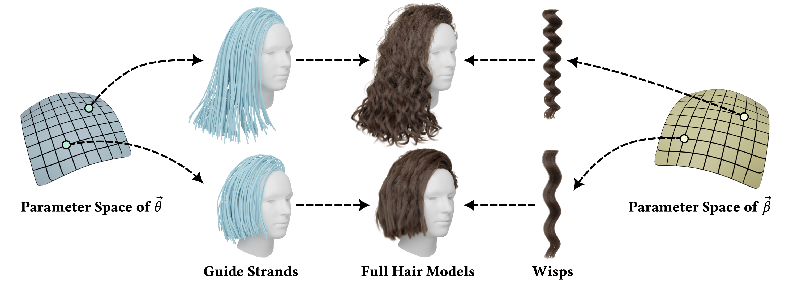
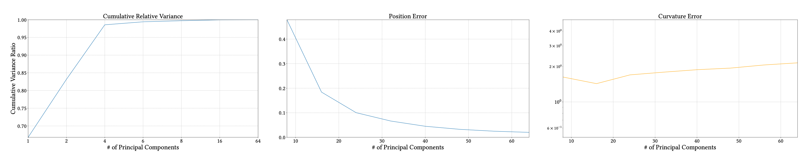
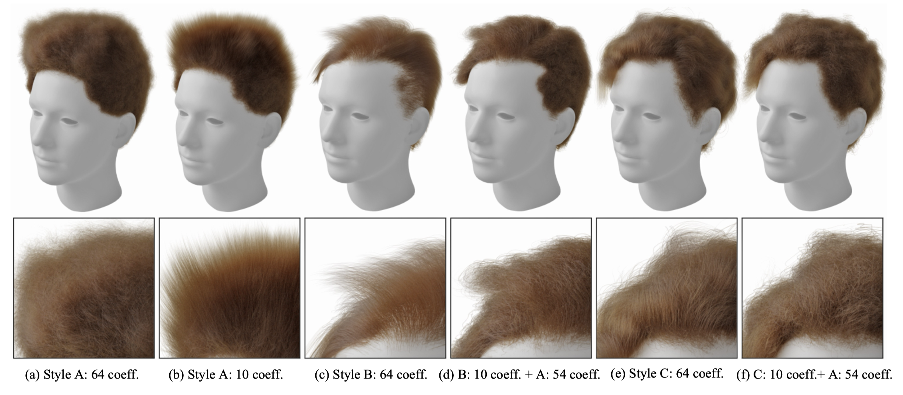
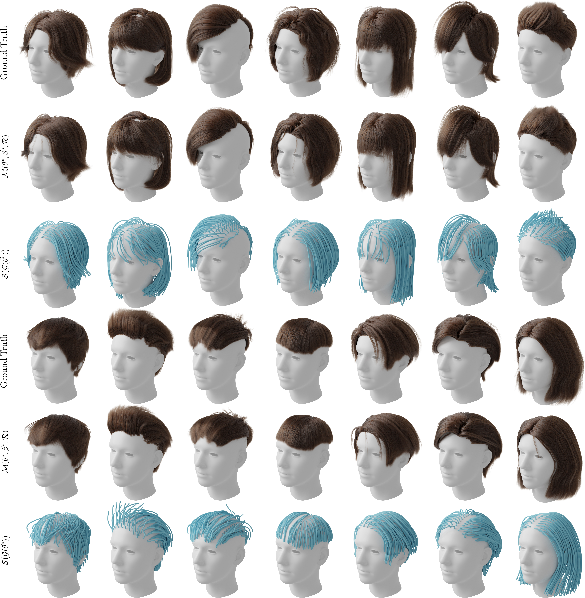
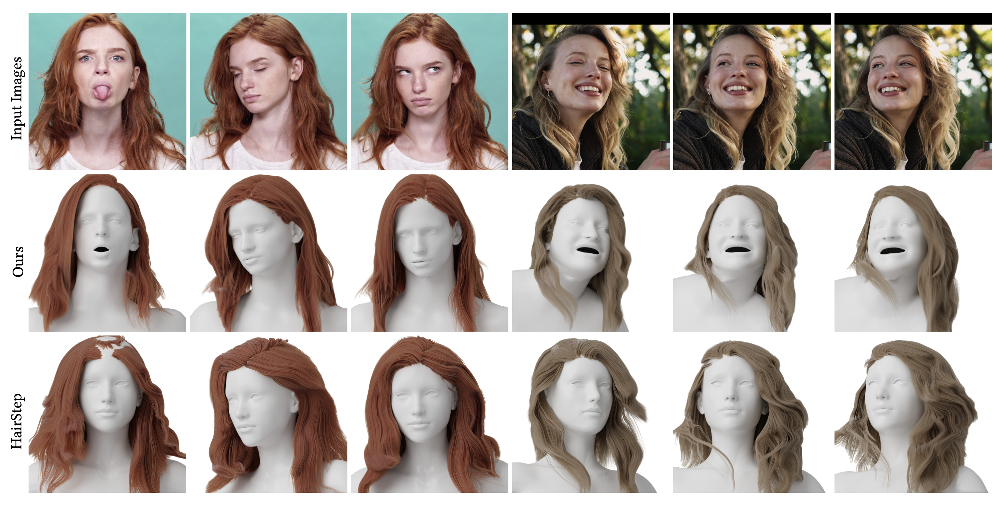
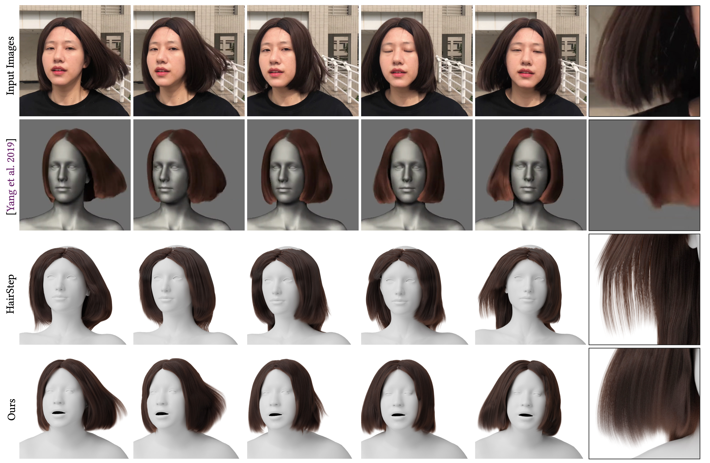
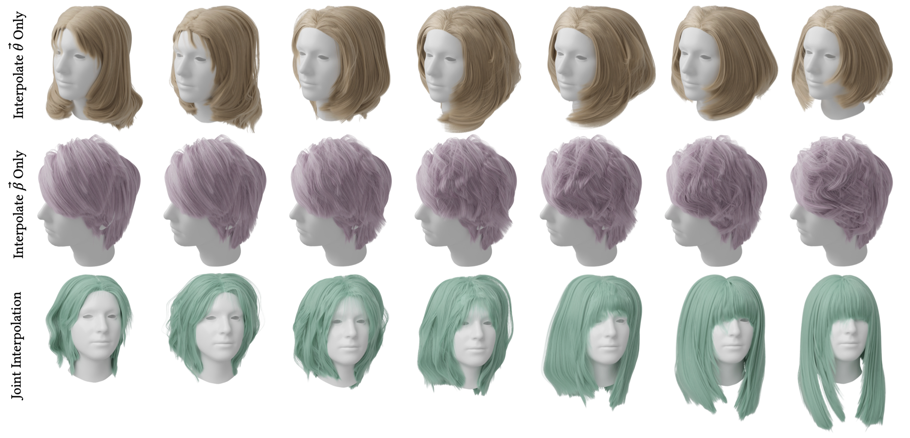
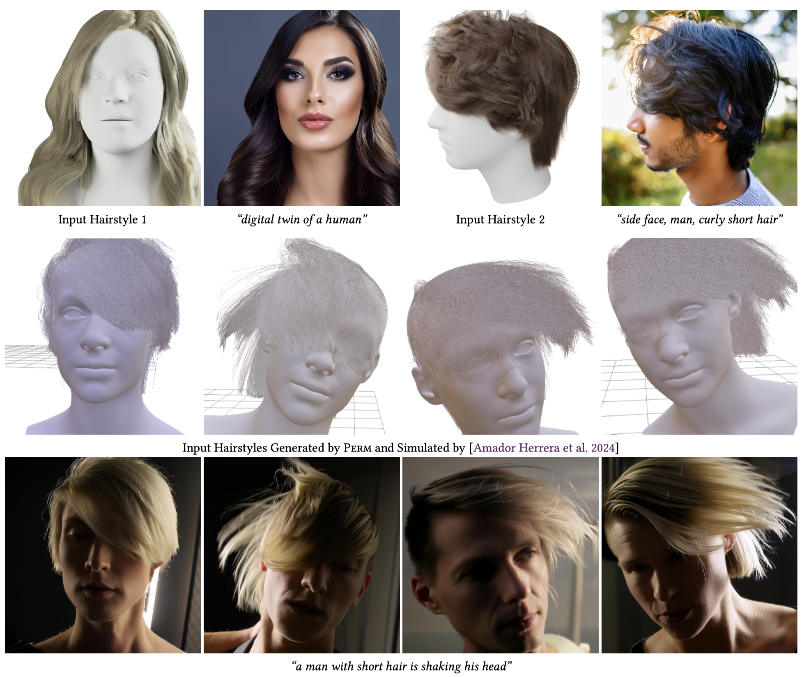

We present Perm, a learned parametric representation of human 3D hair designed to facilitate various hair-related applications. Unlike previous work that jointly models the global hair structure and local curl patterns, we propose to disentangle them using a PCA-based strand representation in the frequency domain, thereby allowing more precise editing and output control. Specifically, we leverage our strand representation to fit and decompose hair geometry textures into low- to high-frequency hair structures, termed guide textures and residual textures, respectively. These decomposed textures are later parameterized with different generative models, emulating common stages in the hair grooming process. We conduct extensive experiments to validate the architecture design of Perm, and finally deploy the trained model as a generic prior to solve task-agnostic problems, further showcasing its flexibility and superiority in tasks such as single-view hair reconstruction, hairstyle editing, and hair-conditioned image generation.
We design a parametric model of 3D human hair that is designed with disentangled parameters \(\vec{\theta}\) and \(\vec{\beta}\) to respectively control the global haircut types (represented as guide strands) and local curl patterns (represented as wisps).

The key component is a PCA-based strand representation in the frequency domain, which we found effective to represent the variation of different hair strands and facilitate hairstyle decomposition. Based on this strand representation, we store each hairstyle as a texture map and decompose it into different frequency components. Finally we train different generative models to parameterize each type of the decomposed textures.
Our strand representation is inspired by the prevalent PCA-based linear blendshapes in digital human modeling, but solved in the frequency domain. Computed on all strands from USC-HairSalon, we found ~20 principal components are able to explain 100% of the variance in the training set, but increasing their number makes the final representation generalize better to unseen data.

These PCA blendshapes are proved to be explainable, as they correspond directly to frequency bands. Based on this intuition, we can easily smooth a hairstyle, or transfer its strand-level details to a different hairstyle while maintaining a similar haircut.

Similar to AMASS, we curated a parametric dataset of 3D hairstyles from USC-HairSalon, which contains fitted parameters \(\vec{\theta}\) and \(\vec{\beta}\) from the 3D strand input. Data from other resources could be integrated as well in this unified format.

Here we show the example of single-view hair reconstruction, and compare our results with [Yang et al. 2019] and HairStep.


Here we show the example of Perm parameter editing, where we interpolate different parameters to edit the output with different granularity.

Here we show the example of conditional image synthesis using 3D hairstyles generated by Perm as input.

@inproceedings{he2025perm,
title={Perm: A Parametric Representation for Multi-Style 3D Hair Modeling},
author={He, Chengan and Sun, Xin and Shu, Zhixin and Luan, Fujun and Pirk, S\"{o}ren and Herrera, Jorge Alejandro Amador and Michels, Dominik L. and Wang, Tuanfeng Y. and Zhang, Meng and Rushmeier, Holly and Zhou, Yi},
booktitle={International Conference on Learning Representations},
year={2025}
}